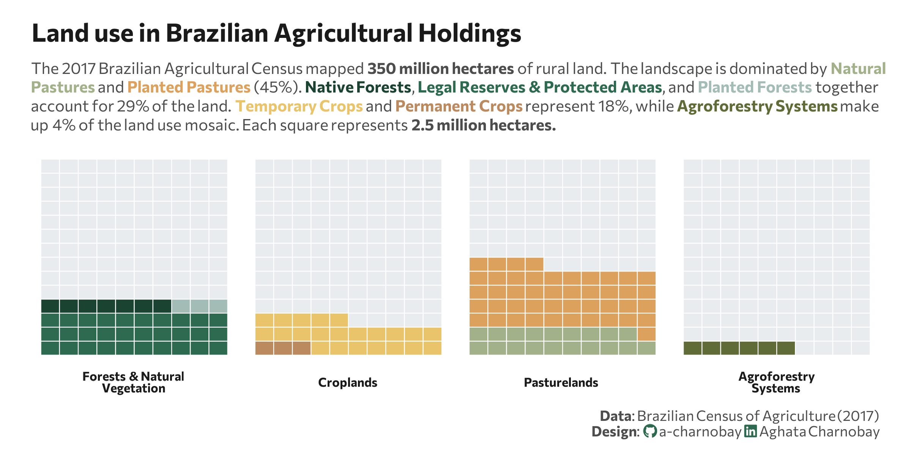

library(reticulate)
use_virtualenv("r-reticulate", required = TRUE)
#py_config()01.Part-to-Whole
Comparisons
Waffle

1 Setup
1.1 Create R and Python connection
1.2 Load data
import agrobr
import asyncio
import pandas as pd
import numpy as np
from agrobr import ibge
df = asyncio.run(agrobr.datasets.censo_agropecuario("uso_terra"))print(df.head())
df_clean = df[
(df['ano'] == 2017) &
(df['unidade'] == 'hectares')
].copy()1.3 Load R packages
library(tidytext)
library(ggtext)
library(showtext)
library(stringr)
library(tidyverse)
library(waffle)
library(here)1.4 Set theme
# Font setup
font_add_google("Commissioner")
showtext_auto()
showtext_opts(dpi = 300)
font_main <- "Commissioner"
# Font Awesome for caption
font_add(family = "fa-brands", regular = here("fonts", "Font Awesome 7 Brands-Regular-400.otf"))
# Colors
title_col <- "grey10"
text_col <- "grey30"
bg_col <- "#F2F4F8"2 Prepare data for plotting
n_rows_waffle <- 10
total_squares_goal <- 140
# Define waffle category order
custom_order <- c(
"Forests & Natural<br>Vegetation",
"Croplands",
"Pasturelands",
"Agroforestry<br>Systems",
"Others"
)
# Renaming category column
df_waffle_final <- py$df_clean |>
filter(!is.na(valor)) |>
mutate(
category = case_when(
str_detect(categoria, fixed("agroflorestais", ignore_case = TRUE)) ~ "Agroforestry<br>Systems",
str_detect(categoria, fixed("Lavouras", ignore_case = TRUE)) ~ "Croplands",
str_detect(categoria, fixed("Pastagens", ignore_case = TRUE)) ~ "Pasturelands",
str_detect(categoria, fixed("Matas", ignore_case = TRUE)) |
str_detect(categoria, fixed("florestas", ignore_case = TRUE)) ~ "Forests & Natural<br>Vegetation",
TRUE ~ "Others"
),
# Renaming subcategory
subcategory = case_when(
category == "Pasturelands" & str_detect(categoria, "naturais") ~ "Natural Pasture",
category == "Pasturelands" & str_detect(categoria, "más condições") ~ "Planted (Degraded)",
category == "Pasturelands" & str_detect(categoria, "boas condições") ~ "Planted (Good)",
category == "Croplands" & str_detect(categoria, "permanentes") ~ "Permanent Crop",
category == "Croplands" & str_detect(categoria, "temporárias") ~ "Temporary Crop",
category == "Croplands" & str_detect(categoria, "flores") ~ "Temporary Crop",
str_detect(category, "Forests") & str_detect(categoria, "plantadas") ~ "Planted Forest",
str_detect(category, "Forests") & str_detect(categoria, "preservação") ~ "Legal Reserve/APP",
str_detect(category, "Forests") & str_detect(categoria, "naturais") ~ "Native Forest",
str_detect(category, "Agroforestry") ~ "Agroforestry",
TRUE ~ "Other Land Uses"
)
) |>
group_by(category, subcategory) |>
summarise(valor = sum(valor), .groups = "drop") |>
group_by(category) |>
mutate(
squares = as.integer(round(valor / 2500000)),
# Agroforestry to have at elast one square
squares = if_else(valor > 0 & squares == 0, 1L, squares)
) |>
group_modify(~ {
used_squares <- sum(.x$squares)
bind_rows(.x, tibble(subcategory = "Rest of Brazil", valor = 0, squares = total_squares_goal - used_squares))
}) |>
filter(category != "Others") |>
ungroup() |>
# Transforming in factor for correct order to apply
mutate(category = factor(category, levels = custom_order))
palette <- c(
"Natural Pasture" = "#a3b18a", "Planted (Degraded)" = "#dda15e", "Planted (Good)" = "#dda15e",
"Permanent Crop" = "#BC8A5F", "Temporary Crop" = "#E9C46A",
"Planted Forest" = "#A3BCB5", "Native Forest" = "#1B4332", "Legal Reserve/APP" = "#2D6A4F",
"Agroforestry" = "#606c38", "Other Land Uses" = "#B0B0B0",
"Rest of Brazil" = "#e9ecef"
)3 Plot
p <- ggplot(df_waffle_final, aes(fill = subcategory, values = squares)) +
geom_waffle(color = "white", size = .25, n_rows = n_rows_waffle, flip = TRUE) +
facet_wrap(~category, nrow = 1, strip.position = "bottom") +
scale_fill_manual(values = palette) +
labs(
title = "Land use in Brazilian Agricultural Holdings",
subtitle = paste0(
"The 2017 Brazilian Agricultural Census mapped <b>350 million hectares</b> of rural land. ",
"The landscape is dominated by <span style='color:#a3b18a;'><b>Natural<br>Pastures</b></span> and ",
"<span style='color:#dda15e;'><b>Planted Pastures</b></span> (45%). ",
"<span style='color:#1B4332;'><b>Native Forests</b></span>, ",
"<span style='color:#2D6A4F;'><b>Legal Reserves & Protected Areas</b></span>, and ",
"<span style='color:#A3BCB5;'><b>Planted Forests</b></span> together<br>account for 29% of the land. ",
"<span style='color:#E9C46A;'><b>Temporary Crops</b></span> and ",
"<span style='color:#BC8A5F;'><b>Permanent Crops</b></span> represent 18%, ",
"while <span style='color:#606c38;'><b>Agroforestry Systems</b></span> make<br>up 4% of the land use mosaic. ",
"Each square represents <b>2.5 million<b> hectares."
),
caption = paste0(
"**Data**: Brazilian Census of Agriculture (2017)",
"<br>**Design**: <span style='font-family:fa-brands; color:#2D6A4F;'></span> a-charnobay ",
"<span style='font-family:fa-brands; color:#2D6A4F;'></span> Aghata Charnobay"
)
) +
theme_minimal(base_family = font_main) +
theme(
plot.title = element_text(face = "bold", size = 16, color = title_col,margin = margin(t = 5, b = 10)),
plot.subtitle = element_markdown(size = 10, color = text_col, margin = margin(b = 10),lineheight = 1.2),
plot.title.position = "plot",
plot.caption = element_markdown(size = 9, color = text_col, lineheight = 1.1),
plot.background = element_rect(fill = "white", color = NA),
panel.background = element_rect(fill = "white", color = NA),
plot.margin = margin(10, 20, 10, 20),
panel.grid = element_blank(),
axis.text.x = element_blank(),
axis.text.y = element_blank(),
legend.position = "none",
strip.text = element_markdown(face = "bold", size = 8),
)